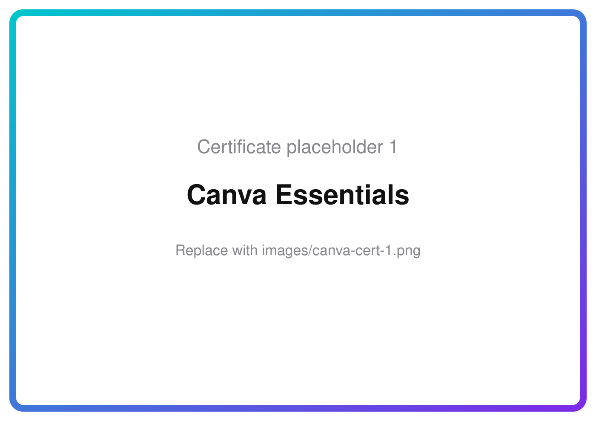

My Work
Projects
The poster, midterm exam, and certifications from my multimedia capstone.
Poster
A poster designed for the capstone — practicing layout, color, typography, and visual hierarchy.
Midterm Exam
My midterm exam — a multimedia project that pulls together the design, image, and editing skills from the first half of the semester.
Certifications
Canva Design School
Three certificates earned through Canva Design School.
Capstone Project
My Multimedia Capstone
Describe your capstone in your own words. What story did you want to tell across your song, video, images, and poster? What was hardest, and what are you most proud of?
- Created an original song with Suno
- Produced and edited a short video
- Created and edited original images
- Designed a poster and earned three Canva certificates
Want to see my multimedia work?
My Suno song, video, and the images I created this semester.